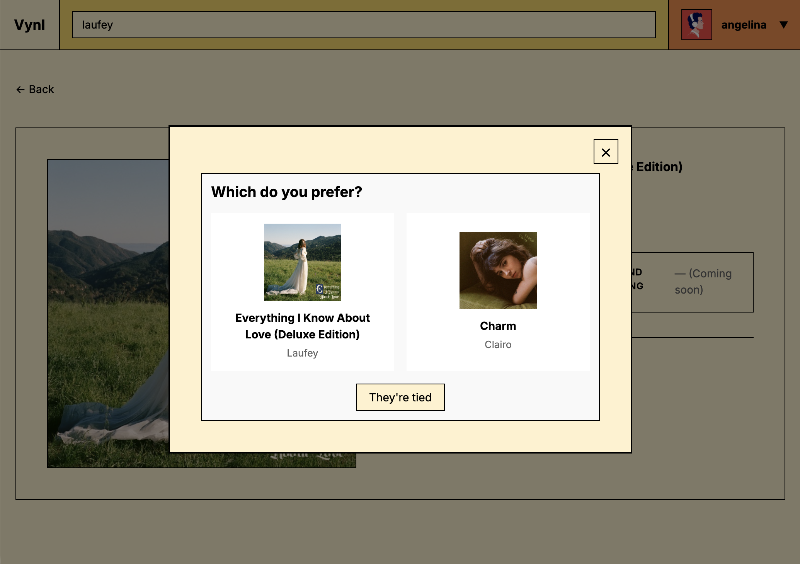
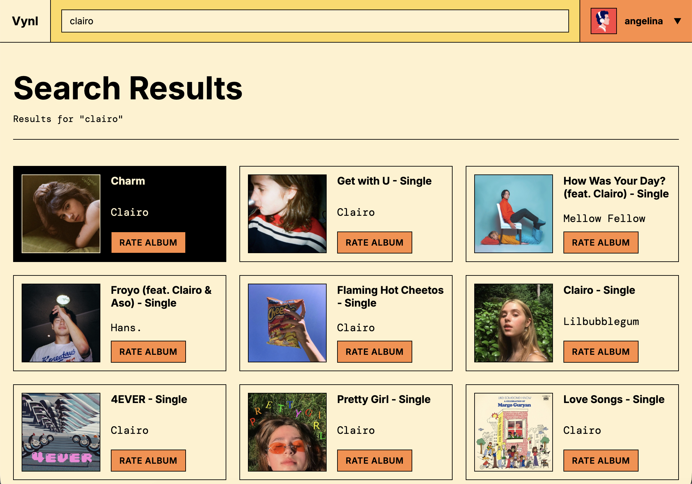
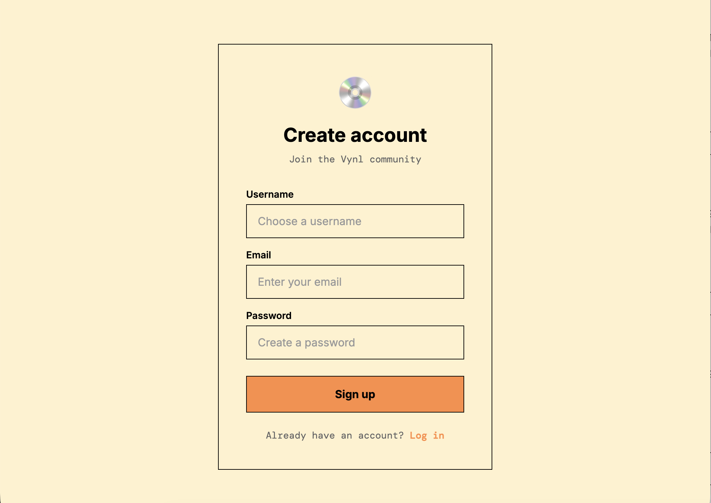
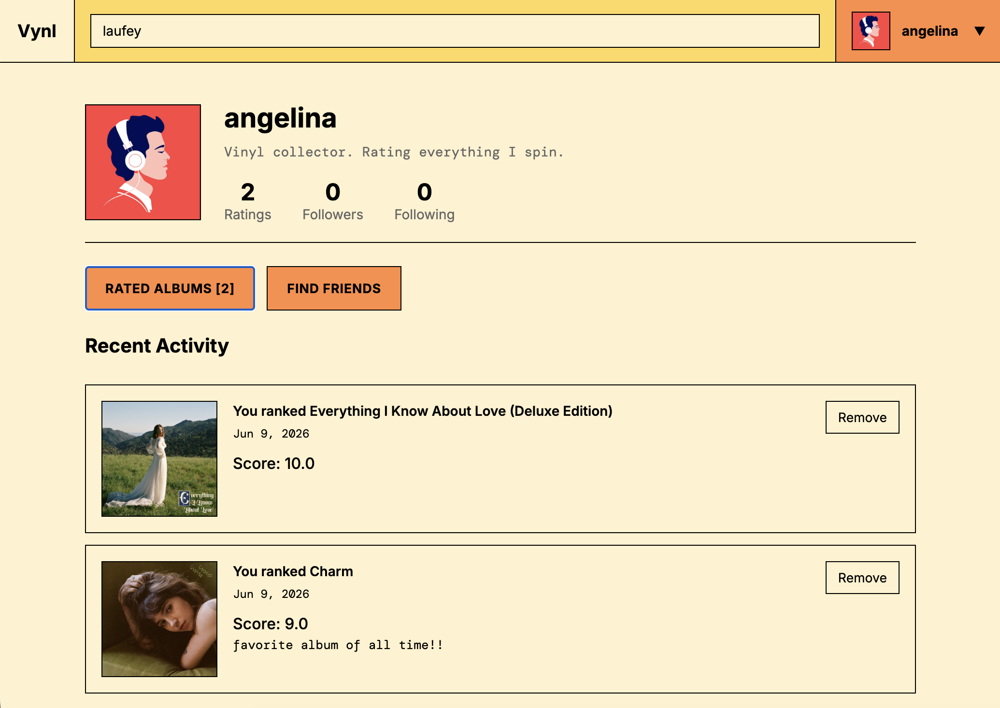

CASE STUDY — PERSONAL PROJECT
A music rating platform using binary search algorithms to rank albums efficiently. Users compare albums across sentiment tiers, with dynamic score redistribution and social features powered by the iTunes API.
FULL-STACK DEVELOPER
MARCH 2026 – JUNE 2026
INSPIRED BY BELI, A RESTAURANT RATING PLATFORM THAT USES SOPHISTICATED COMPARISON ALGORITHMS, VYNL BRINGS EFFICIENT ALBUM RANKING TO THE WEB. THE PROJECT COMBINES ALGORITHMIC THINKING WITH FULL-STACK DEVELOPMENT TO BUILD A COMPLETE PLATFORM FROM DATABASE DESIGN TO REAL-TIME UI.
"HOW DO YOU PRECISELY RANK SOMETHING AS SUBJECTIVE AS MUSIC WITHOUT SPENDING HOURS MAKING DIRECT COMPARISONS?"
USE A BINARY SEARCH ALGORITHM TO MINIMIZE COMPARISONS, ORGANIZE ALBUMS INTO SENTIMENT TIERS, AND DYNAMICALLY REDISTRIBUTE SCORES BASED ON USER FEEDBACK. SEAMLESSLY INTEGRATED WITH ITUNES FOR ALBUM DISCOVERY AND POSTGRESQL FOR SCALABLE DATA PERSISTENCE.

RANKS ALBUMS IN O(LOG N) COMPARISONS WITH DYNAMIC SCORE REDISTRIBUTION ACROSS SENTIMENT TIERS (LIKED, OK, DISLIKED). MINIMIZES USER EFFORT WHILE MAINTAINING RANKING PRECISION.

SEAMLESS ALBUM SEARCH AND METADATA RETRIEVAL. USERS CAN DISCOVER AND RATE MILLIONS OF ALBUMS WITHOUT MANUAL DATA ENTRY.

SECURE LOGIN AND PROFILE MANAGEMENT WITH BCRYPT PASSWORD HASHING. USERS MAINTAIN PERSISTENT RATINGS ACROSS SESSIONS.

FOLLOW OTHER USERS, VIEW THEIR RANKINGS, AND BUILD A MUSIC COMMUNITY. SEE HOW YOUR TASTE COMPARES TO FRIENDS.
LIVE RANKING CHANGES AS USERS RATE ALBUMS. DYNAMIC UI REFLECTS NEW COMPARISONS INSTANTLY WITHOUT PAGE RELOADS.
DEPLOYED ON VERCEL WITH SUPABASE POSTGRESQL DATABASE. FULLY MANAGED INFRASTRUCTURE MEANS ZERO MAINTENANCE AND AUTOMATIC SCALING.
THIS PROJECT DEEPENED MY UNDERSTANDING OF ALGORITHM OPTIMIZATION IN REAL-WORLD APPLICATIONS. THE BINARY SEARCH IMPLEMENTATION TAUGHT ME HOW TO BALANCE USER EXPERIENCE WITH COMPUTATIONAL EFFICIENCY. I GAINED VALUABLE EXPERIENCE IN FULL-STACK DEVELOPMENT — ARCHITECTING A SCALABLE REACT FRONTEND WITH A ROBUST POSTGRESQL BACKEND, DEPLOYING TO VERCEL'S SERVERLESS ENVIRONMENT, AND MANAGING STATE ACROSS COMPLEX USER INTERACTIONS.